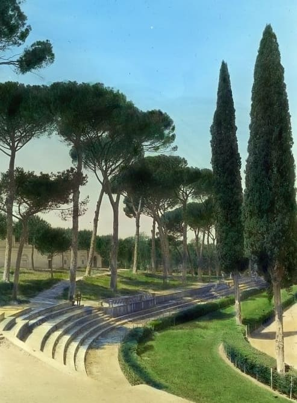

The treatment · 图像处理

Rules · 规则
Photography and screenshots stay crisp — full saturation, full contrast, no filters, no overlays. Every image sits in a .frame: a --color-divider hairline with --radius-md, exactly how a screenshot sits in a tool's UI. Product screenshots may add .elev-sm; reserve anything heavier for floating surfaces, not pictures.
摄影与截图保持清晰处理 — 全饱和、全对比、无滤镜、无蒙层。每张图置于 .frame 内:一条 --color-divider 发丝线加 --radius-md,正如截图在工具界面中的样子。产品截图可加 .elev-sm;更重的阴影只留给浮层,不给图片。